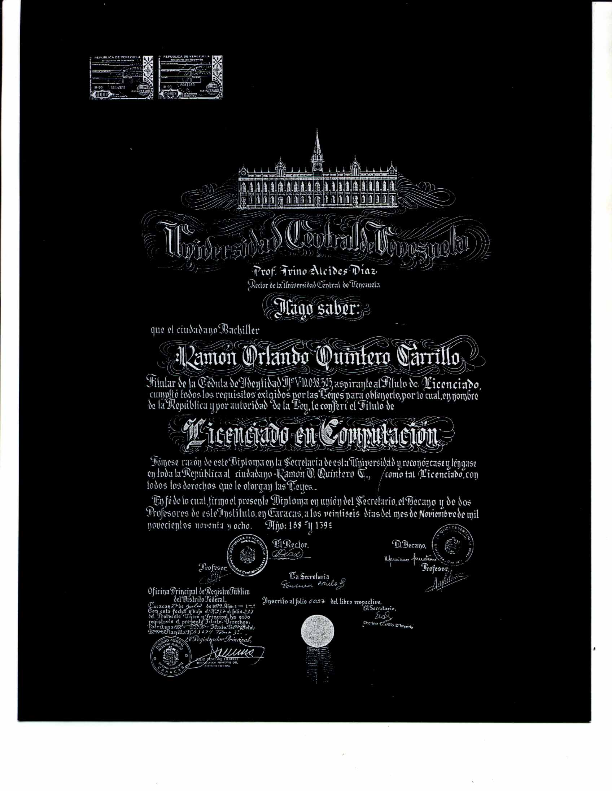
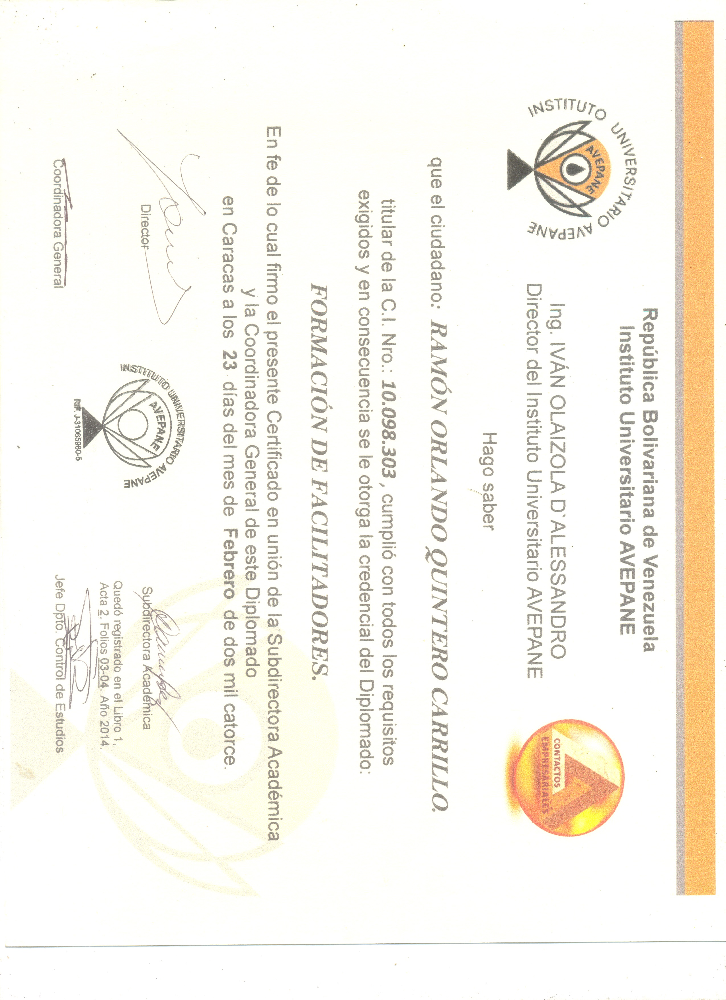
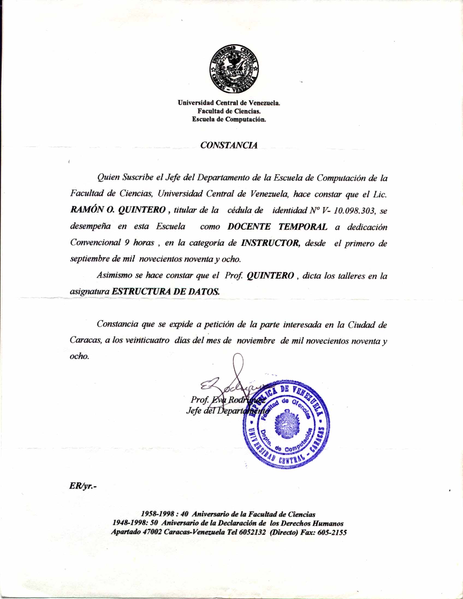
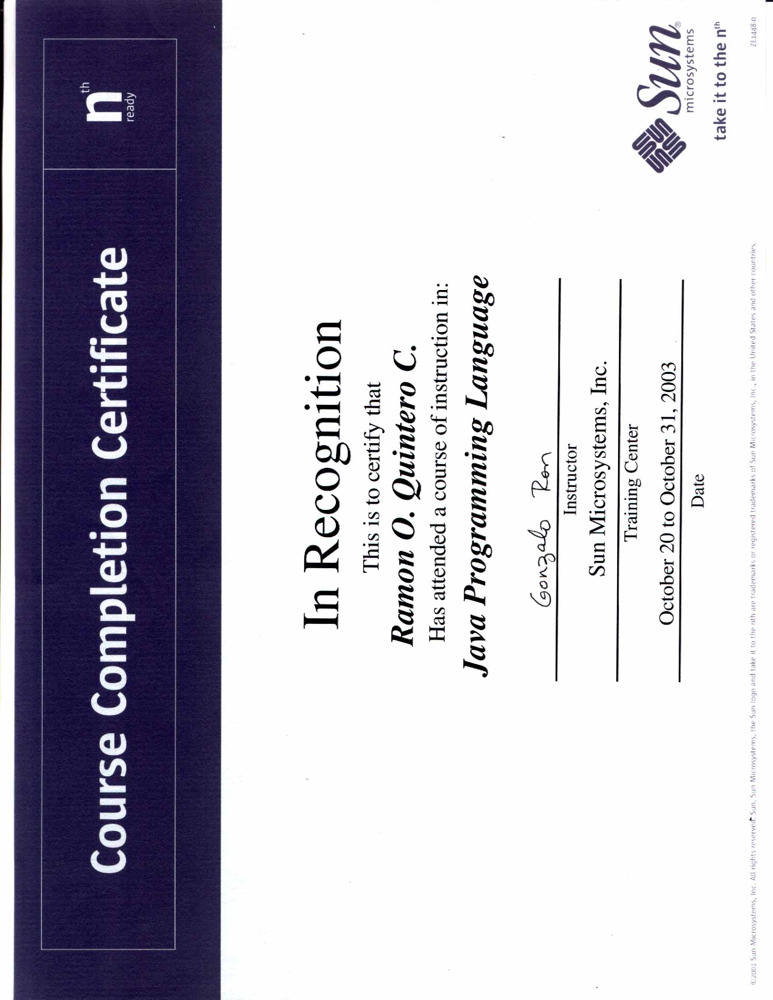
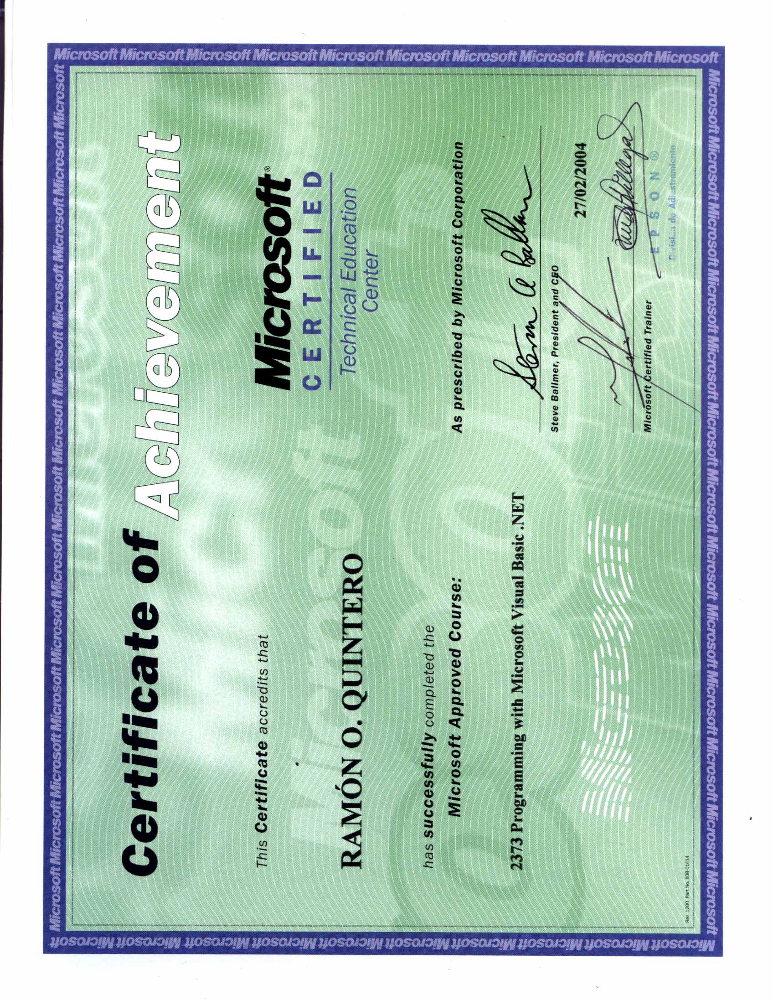
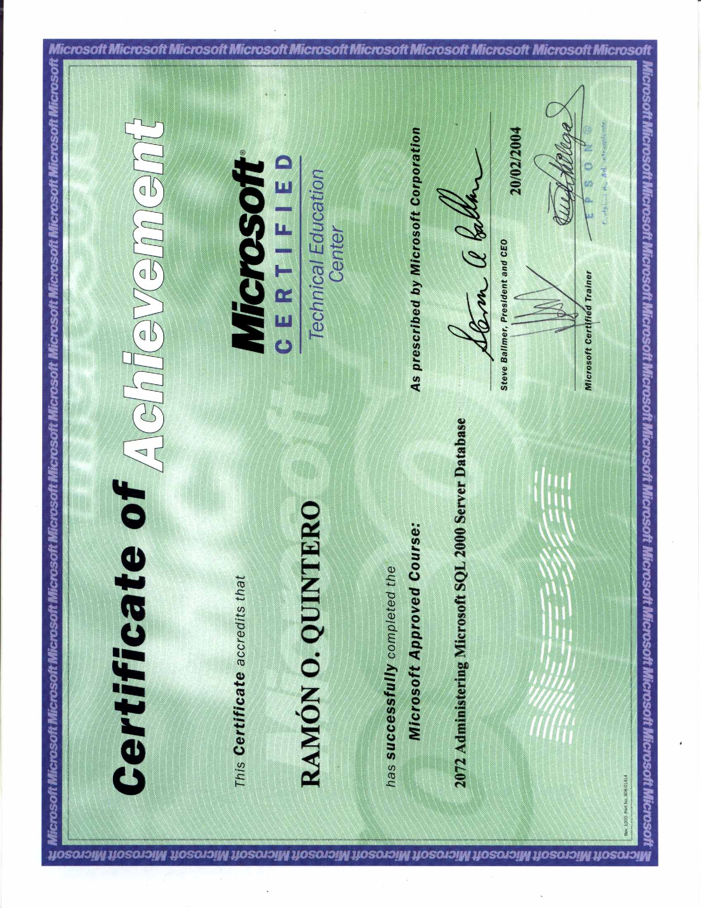

Ramón Quintero
Desarrollador de software y entusiasta tecnológico con 32 años de trayectoria en la creación, facilitación e instrucción de arquitecturas modernas y robustas. Especializado en soluciones multiplataforma, automatización de sistemas multimedia e integración de herramientas avanzadas de inteligencia artificial para la optimización de procesos y entornos empresariales. Docente y guía en el uso de herramientas de desarrollo
Habilidades Clave
.NET MAUI
Visual Studio C#
Java
Capacitor
Electron
Node.js
Sql Server MySQL PostgreSQL Oracle
.NET Blazor
Certificaciones y Logros






